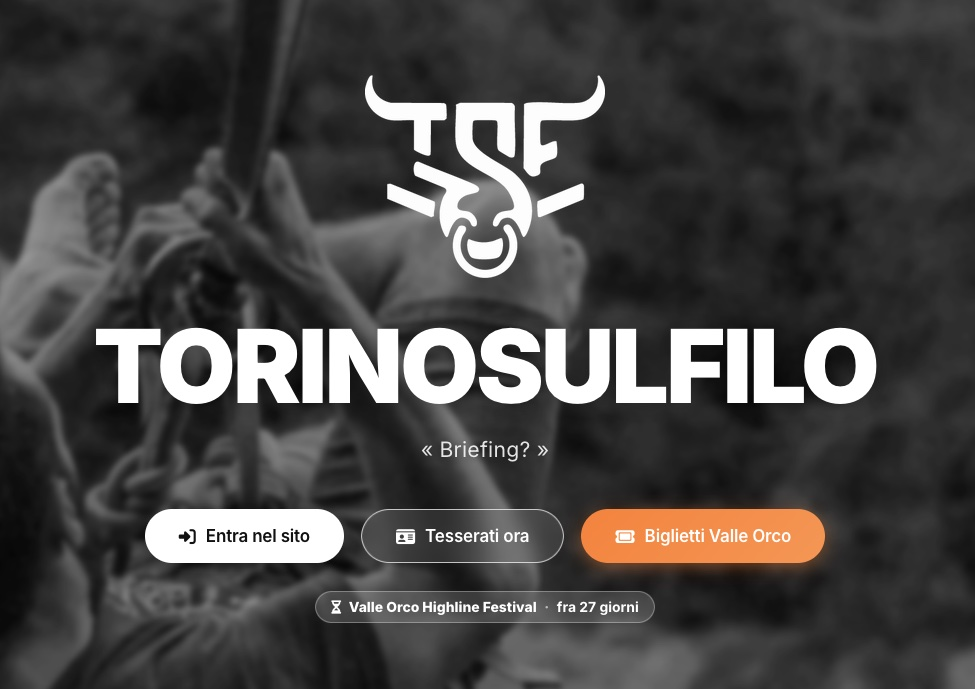

Web

Torino Sul Filo
2026Sito e piattaforma biglietti
Sito dell'associazione di slackline di Torino e piattaforma che ne regge il tesseramento, la biglietteria e gli eventi.
- Tesseramento online
- Biglietteria con PDF
- Check-in agli eventi
- Schede dei corsi
- Pannello di gestione